BC's electricity balance: the drought, imports and demand since 1980
Six questions about British Columbia's electricity, each answered with open data and a method suited to it, from extreme-value statistics and regime models to machine learning and calibrated forecasts. The results are as of October 2026, with data through July 2026; the live dashboard updates the main series each month.
Personal project: my own analysis of publicly available data. It is not associated with my work for any current or past employer and does not represent their views.
At a glance
| Question | Methods | Answer |
|---|---|---|
| How rare was the drought? | Lognormal return periods, bootstrap, Theil-Sen trend | 2023 was a once-in-about-100-years low on the Fraser; 2023-2024 its driest two years since 1913. |
| How much hydro did it cost? | Regression on reservoir inflows, leave-one-year-out | Low inflows explain 7.1 TWh (90%: 5.4-8.7) of the 11.3 TWh fall in hydro output in 2023. |
| Where did the power come from? | Accounting identity, weather normalisation | Imports: net imports rose 14.3 TWh while fossil-fuel generation fell. |
| How does trade move hour by hour? | k-means, principal components, Markov switching | Three kinds of trading day; a heavy-import regime from September 2022 to August 2025. |
| Can the hourly flow be forecast? | Ridge and gradient boosting, expanding-window tests, partial dependence | A day ahead, 8% better than repeating yesterday; BC's own water matters most. |
| How well can demand be forecast? | Seasonal ARIMA, conformal intervals, Kalman filter | To within 3.1-3.8% one to six months out, with ranges that hold as often as stated. |
1. How rare was the drought?
The Fraser at Hope carried 1,954 m³/s on average in 2023, 28% below its median and the second-lowest of 112 years. A year that low comes about once in 100 years (90% range 55-259 years). 2024 was the fourth-lowest, so 2023-2024 were the driest two years in a row on record. There is no long-run trend (p = 0.58): the drought was rare weather, not a drying river.
Hover or tap for any year's flow and rank. Dashed line: median.
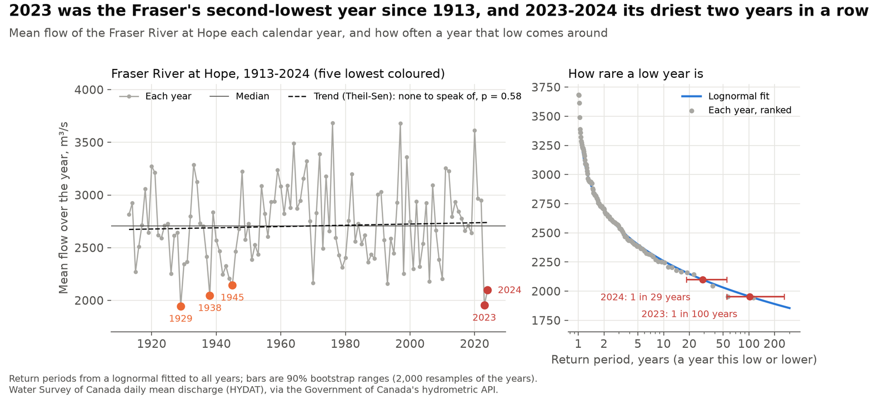
2. How much hydro output did low water cost?
Inflows to BC Hydro's two largest reservoirs ran at 79% of normal in 2023 and 84% in 2024. A model of annual hydro output on this year's and last year's inflows and demand explains two thirds of the variation since 1980 and misses a held-out year by 3.8 TWh on average. With normal inflows it puts 2023's output 7.1 TWh higher, most of the 11.3 TWh fall. The other 4.7 TWh is output the inflows alone would not have cut, consistent with BC Hydro holding water back and buying instead, though the data cannot show it.
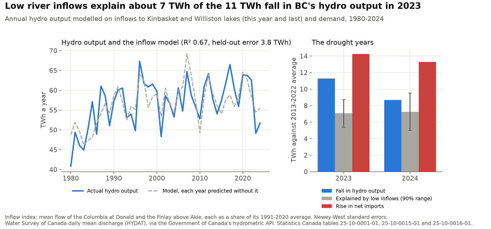
The hydro fleet ran at 34% of what its installed capacity could produce running all year in 2023, the least since 2006, against 45% on average in 2013-2022.
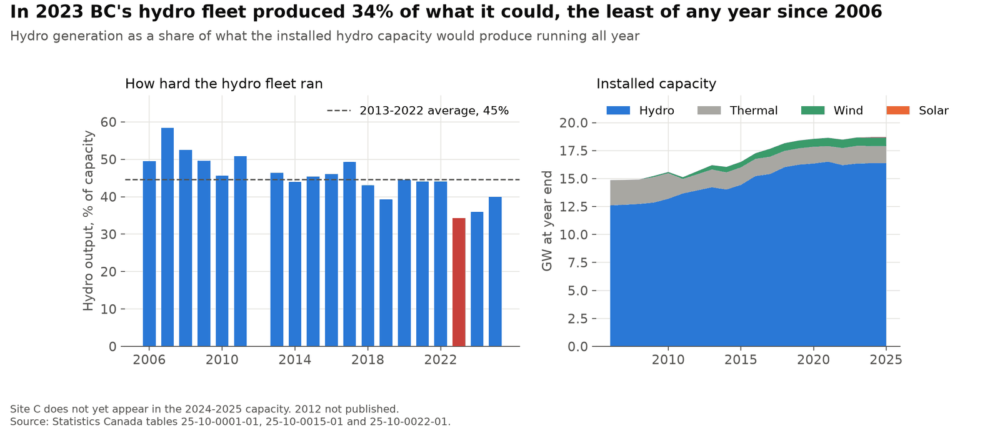
3. Where did the power come from?
Net imports equal demand minus generation, so their change splits exactly into parts. In 2023 net imports were 14.3 TWh above the 2013-2022 average: 11.3 TWh from lower hydro output and 3.5 TWh from demand growth. BC imported rather than burning more gas, and paid $1.52 billion for US power ($92 per MWh) while still selling its own exports for more ($168 per MWh). By 2025 demand growth, not water, kept net imports 8.7 TWh above the average.
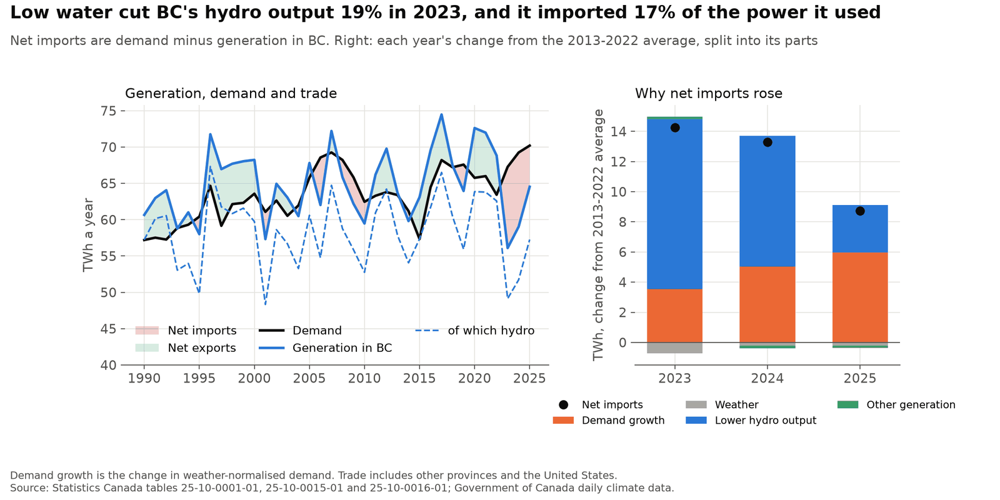
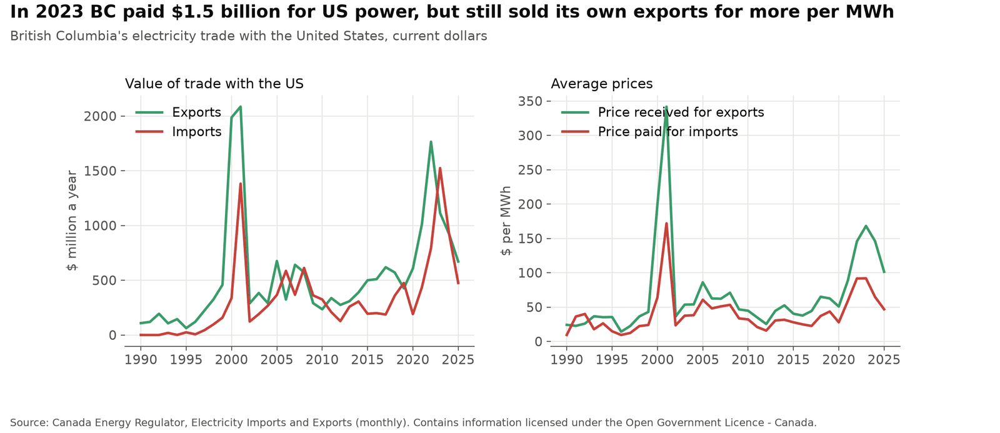
4. How does trade move hour by hour?
Every hour since May 2017 in one picture: blue is power leaving BC, red is power arriving.
Each column is a week, each row an hour of the day. Hover or tap for the week's average flow at that hour.
Grouping the 3,447 days by the shape of their 24-hour flow gives three kinds of day: exporting all day, importing all day, and a two-way day that imports about 330 MW by day and exports about 370 MW in the evening. In 2023, 67% of days were importing all day; in 2026 so far, 67% are exporting all day.
One row per year. Pick a kind of day to highlight it; hover or tap for any day.
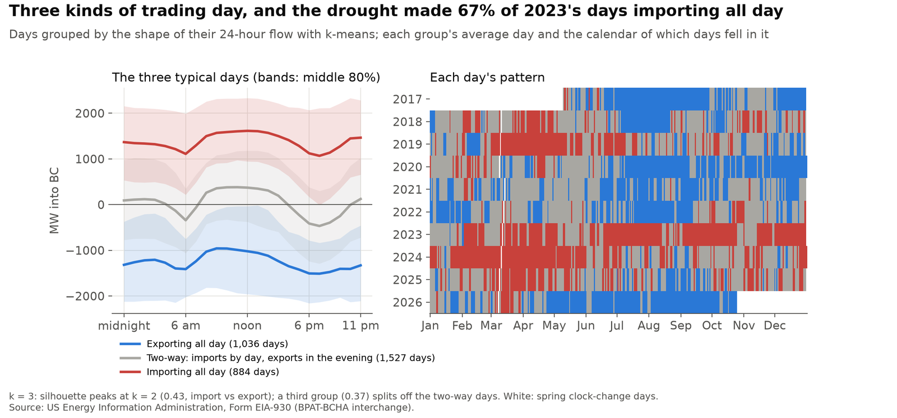
A two-regime Markov-switching model of weekly flows, against the usual for the month, finds a heavy-import regime about 1,350 MW above the other. It dates the drought's spell from 12 September 2022 to 17 August 2025, 153 weeks, after shorter spells in the dry years 2018-2019.
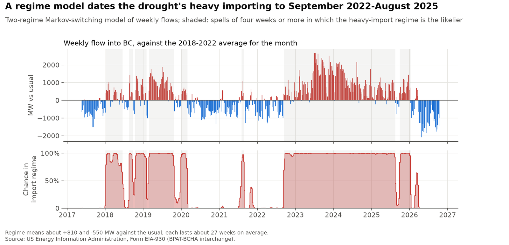
5. Can the hourly flow be forecast?
Forecasting each midnight for the next 24 hours, a linear model misses by 425 MW on average in years it was not trained on: 8% better than repeating yesterday (461 MW) and far better than the usual for the month and hour (984 MW). Gradient boosting does no better (449 MW), and in 2023 nothing beat repeating yesterday, because the drought took the flows outside anything in the training years.
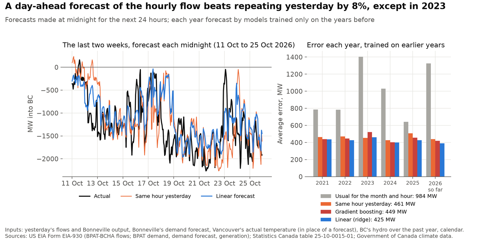
Read through permutation importance and partial dependence, a model of same-hour conditions leans most on BC's own water: at 78% of normal hydro output it expects about 810 MW into BC, at 111% about 460 MW out. Higher demand across the border pulls power out of BC. These conditions alone improve on the usual for the month and hour by only 9%, because trading also turns on prices and reservoir plans that are not in open data.
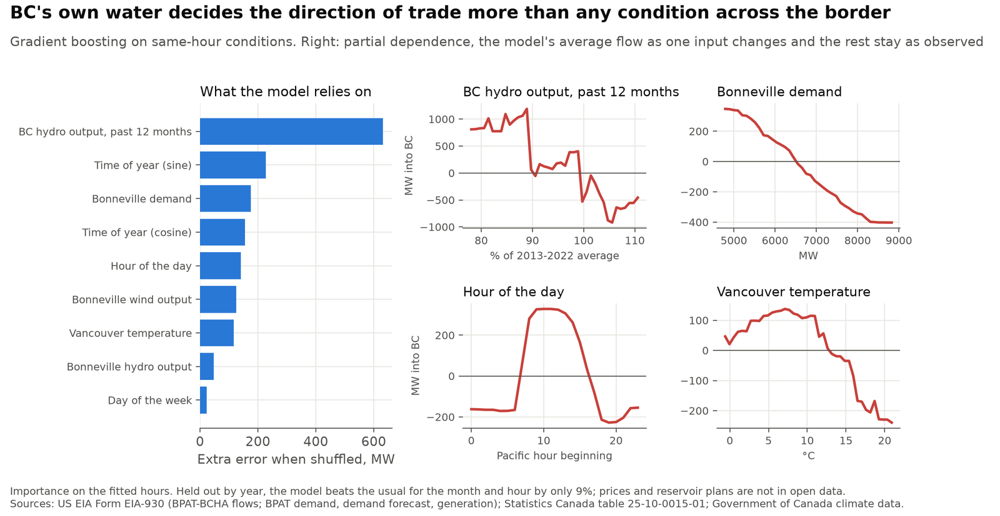
6. How much is weather, and how well can demand be forecast?
Tested from every month since 2014 with only earlier data, a seasonal ARIMA with heating and cooling degree days forecasts monthly demand to within 3.1% a month ahead and 3.8% six months ahead, beating exponential smoothing and the same month last year. Its own 80% ranges held only 66% of outcomes, because they treat the weather ahead as known; ranges set from its past errors held 81%.
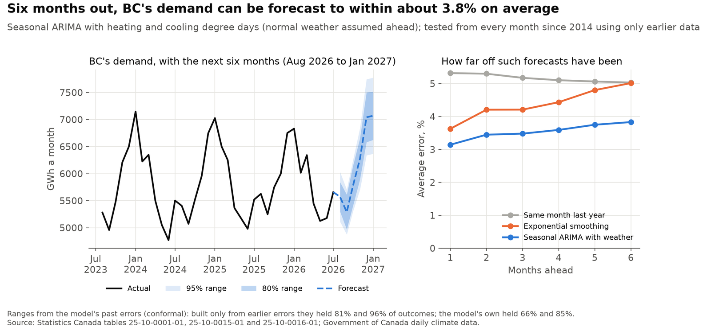
Weather moves a year's demand by at most 1.2 TWh, and the effect is clear of zero in most years. Demand has grown two thirds since 1980 after removing it, and a degree colder now adds about three times the load it did in 1980 (Kalman filter, p < 0.001).
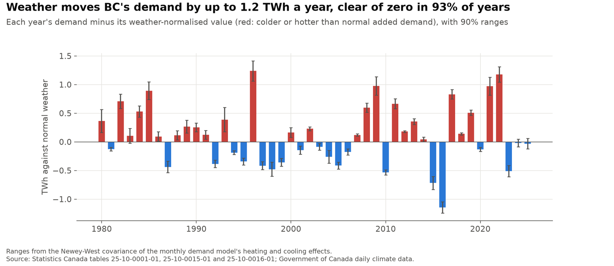
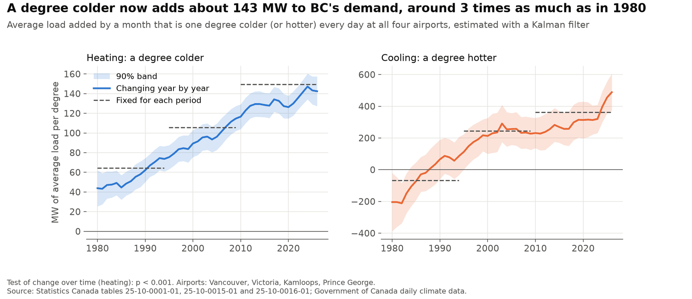
Limits
- Two gauges stand in for inflows to BC Hydro's reservoirs, and the river archive runs only to early 2025, updated about once a year.
- Hourly flows cover the BC Hydro-Bonneville connection only; prices, Alberta trade and BC's hourly demand are not in open data, which caps how well the flow can be explained.
- The day-ahead forecast uses the day's actual Vancouver temperature in place of a forecast, so it is slightly optimistic.
- Partial dependence shows associations in the data, not what would happen if one input changed alone.
- Statistics Canada's 2015 demand figure is about 4 TWh below the years either side and is kept as reported.
- Site C does not yet appear in the capacity data, so the 2024-2025 hydro capacity factors may be overstated.
Data
Statistics Canada tables 25-10-0001-01, 25-10-0015-01, 25-10-0016-01 and 25-10-0022-01; the Canada Energy Regulator's monthly electricity trade; the Water Survey of Canada's daily river flows (HYDAT); Government of Canada daily climate data; and the US Energy Information Administration's Form EIA-930 (public domain). Analysis in Python with pandas, statsmodels and scikit-learn, with automated tests; interactive charts drawn in plain JavaScript; code under the MIT licence.
Adapted from Statistics Canada; this does not constitute an endorsement by Statistics Canada of this product. Contains information licensed under the Open Government Licence - Canada.